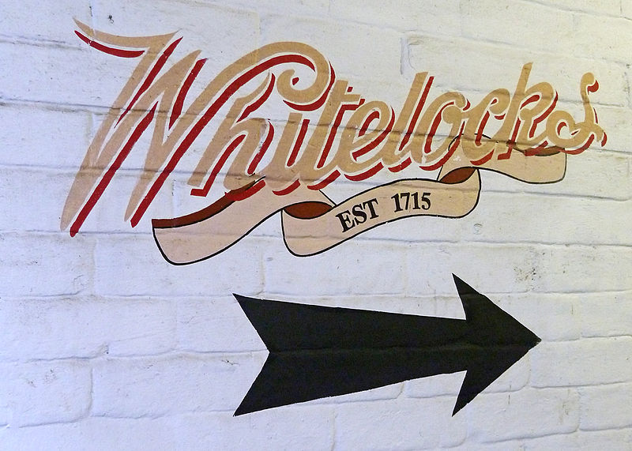

We doubt, knowing GeoComp, you'll want to do anything other than head to bed early every night with a cocoa, but given the very slim chance you might want to head into Leeds for an evening, we thought you might like some recommendations. Our excellent PhD students have pulled together this helpful list.
(NB:In terms of safety, Leeds is a generally safe city, but like any other major town, you obviously need to keep your wits about you.)
The Domino Club: eclectic jazz bar behind a barbers (closed Tuesday).
Call Lane and the Calls have a variety of bars with a variety of music types (such as the Tiki Bar upstairs of Call Lane Social, open Wednesday-Saturday).
Revolucion de Cuba (end of Call Lane) has a salsa class social on Tuesdays, or general salsa music all night.
There are also multiple bars on Multiple bars on Merion street; perhaps, most notably Manahatta.
There are a number of pubs around the University, including the Faversham just down the hill from Storm Jameson; The Fenton ~500m down towards town from the Parkinson Building; can have live bands; and The Packhorse, Eldon, and Library, all of which are ~500m up the road the other way. The Library usually has plenty of space for bigger groups.
In town, the Turk's Head pub is worth a visit, as is the Victoria – elegant town pub from a bygone era. You might also be interested in the old traditional pubs down the alleyways on the left as you go down Briggate, such as Whitelocks. They're not large enough for big groups, but they are otherwise worth the visit. If you're feeling geographical, you might like to know that the alleys exist because they mark out roads between the old Anglo-Saxon field units.
Friends of Ham is a charcuterie bar, serving lots of good wine and beer.
In terms of specific drinks, Decanter specialises in wine, while for sherry and Tapas, we recommend Ambiente; Cocktails: Alchemist and Botanist in the Trinty Centre, and beers: Tapped.

Whitelocks, probably the oldest pub in Leeds.
Rendezvous Café and Lounge is a nice zero-alcohol lounge that's open late. You can find it next to the University.
There are also plenty of cafés open in town, though they tend to shut around 6 or 7 unless they are also serving alcohol. Later than that, your best bet is La Bottega Milanese (which does serve wine and beer as well), and the other resturants in The Light, as well as those in Trinity.
It would be impossible to list all the great resturants in Leeds, but good areas to look for places to eat include Millennium Square, The Light, Trinity, and Call Lane and the Calls. For cheaper places, see the area opposite the Parkinson Building, along with Commercial Street.
There's a good range of theatres in Leeds, including the Yorkshire Playhouse, The Grand, City Varieties, and The Carriageworks.
The main cinemas are in The Light, and The Everyman. If you're feeling adventurous, you could find the Hyde Park Picture House, an art-house cinema and one of the oldest cinemas in the country (and the only one still with gas lighting!).
Music tends to be a pub thing in Leeds (see above), but there's also the O2, which does bigger events. For classical music, see Leeds Inspired.